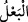

yeryüzündedir. İdris ve İlyas iki ayrı şahsiyet ve kimlikte ayrı ayrı zatlardır. Ahmed b.
Hanbel’in de içinde bulunduğu bir grup âlim, İlyas’ın İdris olduğu ve bu iki ismin tek
bir zat olduğu görüşündedirler. Bu zat, Lemek oğlu, Mettaşlah oğlu, Ahnun’dur. Nuh
(a.s.)’dan önce yaşamıştır. Denilir ki, iki ismi olan beş peygamber vardır. İsimleri
şöyledir: İlyas, İdris’tir; Yakup, İsrail’dir; Yunus Zünnûn’dür; İsa Mehis’tir; Muhammed
Ahmed’dir. Allah’ın salat ve selâmı hepsinin üzerine olsun!
Bazı keşif ehli büyük zatlar da bu konuda ulemaya muvâfakat etmişlerdir. Buna göre
değişik iki ismin aynı zatta toplanmasının mânâsı şudur: İdris, kendi benlik, kimlik ve
suretinde dördüncü kat semada olmakla beraber onun hüviyeti şu ana kadar mevcut olan
“İlyas” kimliğinde zuhur etmiş ortaya çıkmıştır. Sonuçta İdris ve İlyas zat ve hakikat
olarak birdir. Ancak taayyun-i suveri olarak yani bir tek zâtın aynı anda değişik yerlerde
varlığını ispat etmesi bakımından ikidir. Cebrail (a.s.), Mikail (a.s.) ve Azrail (a.s.)
gibi. Bu meleklerden her biri ayrı ayrı tek bir zat oldukları halde aynı halde aynı anda
yüz bin yerde muhtelif şekillerde ortaya çıkarlar. Bu şekil ve suretlerin her biri bunların
bir olan zatlarıyla kâimdir. İşte kâmil insanların ruhları da böyledir. Kadîbü’l-bân el-
Mevsılî (k.s.)’den rivâyete göre bu zat aynı zamanda değişik yerlerde görünür;
göründüğü her yerde farklı işlerle meşgul olurdu. Ancak bu İdris (a.s.)’in kendi öz
kimlik ve benliğinden soyutlanarak İlyas (a.s.)’ın suret ve kimliğine büründüğü
mânâsına gelmez. Yoksa tenasüh/reenkarnasyon gibi bir durum ortaya çıkar ki bu da
bâtıl ve hükümsüzdür.
124, 125, 126. (İlyas) milletine: (Allah’a karşı gelmekten) sakınmaz mısınız?
Yaratanların en iyisi olan, sizin de Rabbiniz, sizden önce gelen atalarınızın da Rabbi
olan Allah’ı bırakıp da Ba’l’e mi taparsınız? demişti.
“(İlyas) milletine:” ve Allah’ın azâbından “sakınmaz mısınız?” “Yaratanların en
iyisi olan, sizin de Rabbiniz, sizden önce gelen atalarınızın da Rabbi olan Allah’ı
bırakıp da Ba’l’e mi” puta mı “taparsınız?” yani puta tapmayınız ondan hayır
ummayınız “demişti.”
“
” lügatte eşlerden koca (erkek) olanı demektir. Erkeğin kadına hükümran olduğu
tasavvur edilmiş; erkek/koca kadını yöneten ve onu koruyan kişi olarak mülâhaza
edilmiştir.[216] Bu nedenle başkasına hükümran olan herkes kocaya benzetilmiş ve koca
mânâsında olan “ba’l” olarak isimlendirilmiştir. Bundan dolayı Araplar kendisiyle
Allah’a yakınlık sağlayacakları put ve mabutlarına onun üstünlük ve himayesine
inandıkları için “ba’l” ismini vermişlerdir. “Ba’l”, Şam’da Bekke halkının taptığı putun